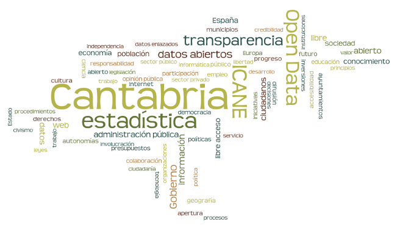
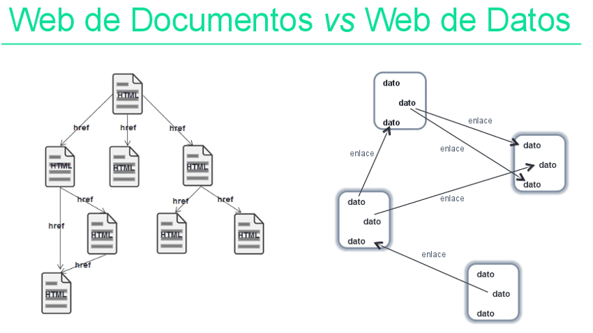

introducción a los
datos estadísticos públicos

datos tabulares

formatos
| consumo | complejidad | popularidad | metadata | |
|---|---|---|---|---|

|
manual | baja | muy alta | alta |

|
manual/auto | media | alta | alta |

|
auto | muy alta | muy baja | alta |

|
auto | muy baja | muy alta | alta |
| auto | media | baja | muy alta |
web semántica

Retos y Oportunidades en Archivos y Gestión Documental ante la Web Semántica, Ana Carrillo Pozas
semstats: ¿para qué?
- mejorar acceso y facilitar análisis de datos estadísticos
- datos bien descritos y contextualizados
- nuevas asociaciones entre conjuntos de datos
- facilidad para habilitar procesamiento automático de recursos web
enlazado: ¿con quién?
| Base de datos | # enlaces |
|---|---|
| Geonames | 4 |
| DBpedia | 45 |
| DBpedia española | 47 |
| INE | 251 (no RDF) |
| Eurostat | 22 (no RDF) |
| LEM para Bibliotecas Públicas | 168 |
| LEM de la Biblioteca del Congreso de EEUU | 151 |
Y además... ICANE está en the Datahub y programmableweb
 hacen falta infraestructuras especiales para procesarlos
hacen falta infraestructuras especiales para procesarlos

Acceso al repositorio con la presentación
URL de la presentación: http://icane.github.io/intro-opendata
Jefe de Sección de Informática Estadística y Banco de Datos